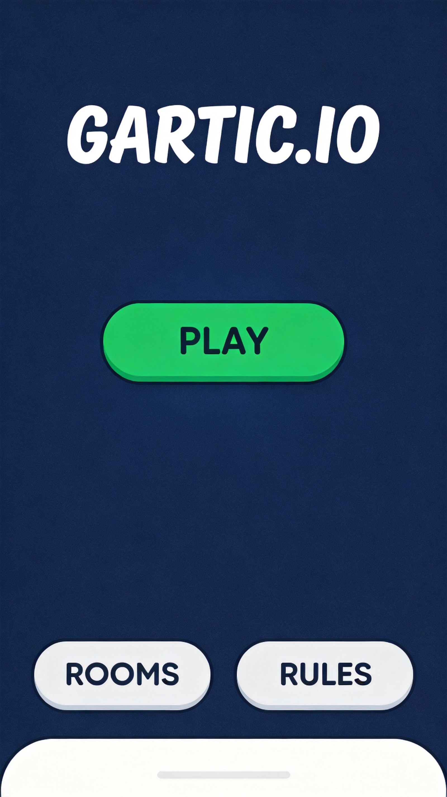
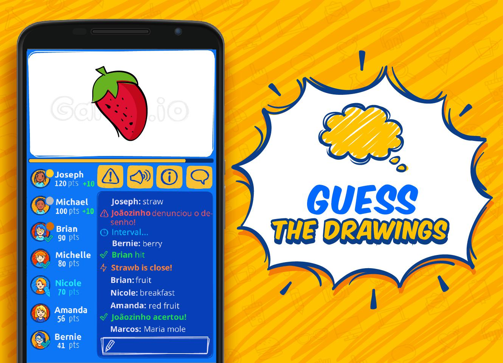
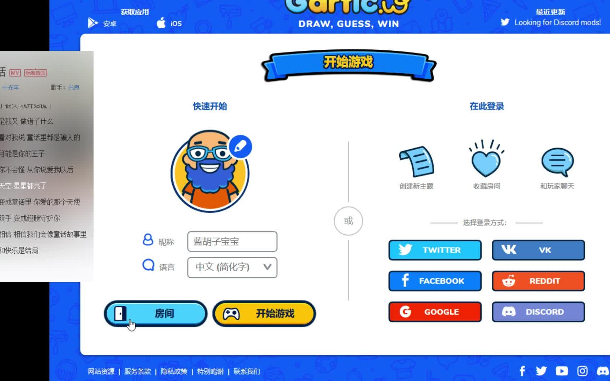
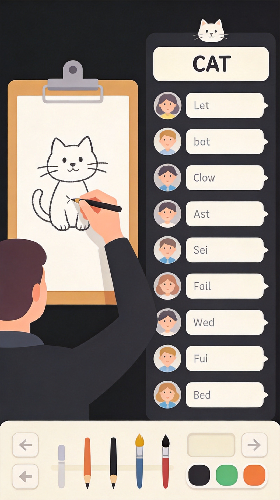
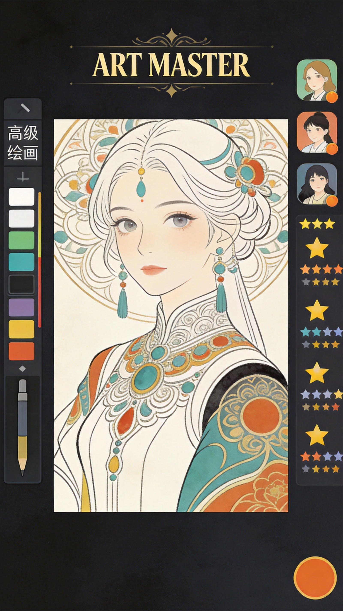

Gartic.io is a popular online drawing and guessing game where players take turns drawing given words while others race to guess what is being drawn. It's a fun, creative party game that combines artistic skill with quick thinking. Whether you're the artist trying to convey the word visually or the guesser trying to decipher the drawing, this guide covers essential strategies for both roles.
🎮 Game Basics

How It Works
Gartic.io follows a simple but engaging format: one player draws a given word while others try to guess it within the time limit. The faster you guess correctly, the more points you earn. As the artist, you earn points based on how many people guess your word.
Game Flow
- Players join a room (public or private)
- Each round, one player receives a word to draw
- Other players type their guesses in chat
- Correct guesses earn points, drawing continues
- After all rounds, player with most points wins
Scoring System
- Guesser Points - Based on speed of correct guess (faster = more points)
- Artist Points - Based on how many players guess correctly
- Bonus Points - First correct guess often gets bonus
Controls
- Left Click/Drag - Draw
- Right Click - Erase
- Scroll Wheel - Adjust brush size
- Color Palette - Select drawing colors
🎨 Drawing Tips

1. Start with the Outline
Begin by drawing a basic shape or outline of your subject. This gives guessers a framework to work with. Don't start with details—build from general to specific.
2. Use Simple Shapes
Complex drawings take too long. Use basic shapes—circles, squares, triangles—to represent objects quickly. A stick figure can convey a person; a triangle can be a tree.
3. Focus on Key Features
Every object has defining characteristics. For a cat, it's the ears and whiskers. For a car, it's the wheels. Identify and emphasize these features first.
4. Use Colors Strategically
Colors provide crucial clues. Use accurate colors when possible—they help identify objects instantly. Red apple, green grass, blue sky.
5. Draw Related Elements
Sometimes drawing something related to the word helps. For "beach," draw sun and waves. For "happy," draw a smiley face with tears of joy.
6. Write Letters/Numbers
If allowed in the room settings, writing letters can help. First letter, number of letters, or even parts of the word spelled out can give big hints.
Avoid writing the word or obvious hints in the chat. The game has filters, and cheating ruins the fun for everyone.
🔍 Guessing Strategies

1. Watch the Timer
Speed matters. Start guessing as soon as drawing begins. Don't wait for the artist to finish—make educated guesses based on early strokes.
2. Think Broad First
Begin with general categories. Is it an animal? Object? Place? Once you narrow down the category, guess specific items within it.
3. Analyze the Strokes
Pay attention to what the artist draws first. Shapes and outlines reveal the subject type. Details come later.
4. Use the Letter Hints
If letter hints are enabled, use them strategically. First letter, word length, and letter positions all narrow down possibilities.
5. Consider the Artist's Skill Level
A scribble might represent something complex from a less skilled artist. Adjust your expectations based on the drawing quality.
6. Guess Frequently
You can submit multiple guesses. Don't be afraid to guess wrong—each wrong guess costs nothing. Wrong guesses eliminate possibilities.
7. Type Fast
In competitive modes, typing speed matters. Keep your fingers ready and type immediately when you think you know the answer.
🏠 Room Settings
Public vs Private Rooms
Public Rooms - Random players, various skill levels, good for casual play
Private Rooms - Play with friends, customizable settings, better for practice
Important Room Settings
- Round Time - 60-180 seconds. Longer for harder words
- Rounds Per Game - How many drawing turns per player
- Word Difficulty - Easy, Medium, Hard, or Mixed
- Max Players - Room capacity
- Chat Enabled - Allow text chat (some modes disable this)
- Draw Mode - Classic, No Draw, or Speed Draw
Creating Your Own Room
To create a private room:
- Click "Create Room" button
- Set your preferred rules
- Share the room code with friends
- Adjust settings as needed
📝 Word Lists
Easy Words (Beginners)
Cat, Dog, House, Tree, Sun, Moon, Apple, Car, Book, Flower
Medium Words (Intermediate)
Rainbow, Umbrella, Bicycle, Astronaut, Dragon, Treasure, Volcano, Lighthouse, Penguin, Telescope
Hard Words (Advanced)
Constellation, Archaeology, Symbiosis, Renaissance, Paraphernalia, Chrysanthemum, Quarantine, Stereotype
Themed Categories
- Food - Pizza, Sushi, Tacos, Burger, Pasta
- Animals - Elephant, Dolphin, Octopus, Flamingo
- Places - Beach, Mountain, Castle, Museum
- Professions - Doctor, Chef, Scientist, Artist
- Sports - Basketball, Swimming, Tennis, Soccer

💎 Pro Tips
Practice basic shapes. Circles, squares, triangles, and lines can draw almost anything. Master these fundamentals first.
Learn common symbols. Stars for sparkle, spiral for tornado, wavy lines for water. Universal symbols communicate quickly.
Skip the eraser. In fast-paced games, drawing over mistakes is faster than erasing. Time spent erasing is time not drawing.
Use proportions wisely. Making something oversized compared to other elements hints at importance. A giant sun next to a small house suggests "sunny day."

❓ Frequently Asked Questions
Can I play Gartic.io on mobile?
Yes, Gartic.io is available on both desktop browsers and mobile devices. The mobile version has touch controls for drawing and guessing.
How do I improve my drawing skills?
Practice regularly in solo mode or private rooms. Focus on simplicity and speed first. Study basic shapes and how to combine them into complex objects.
What happens if I draw the wrong word?
You can't change your assigned word. If you make mistakes, work with them creatively or draw around the error. Sometimes mistakes can be turned into features.
Is Gartic.io free?
Yes, Gartic.io is completely free to play. No download required—just open your browser and start playing.
How do private rooms work?
Create a room and customize settings like round time, word difficulty, and max players. Share the room code with friends to invite them.
📝 Conclusion
Gartic.io is a game that rewards creativity, quick thinking, and observation skills. Whether you're drawing or guessing, practice and experience will make you better. Remember: it's a party game, so have fun with it!
Ready to play? Jump into Gartic.io and test your drawing and guessing skills!
Last updated: January 20, 2024
Written by the iogameguide.com team